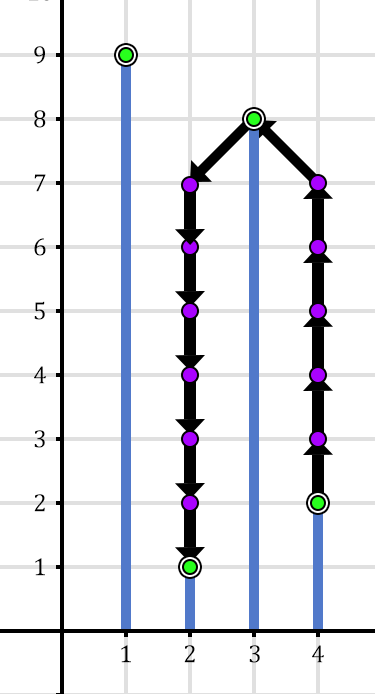
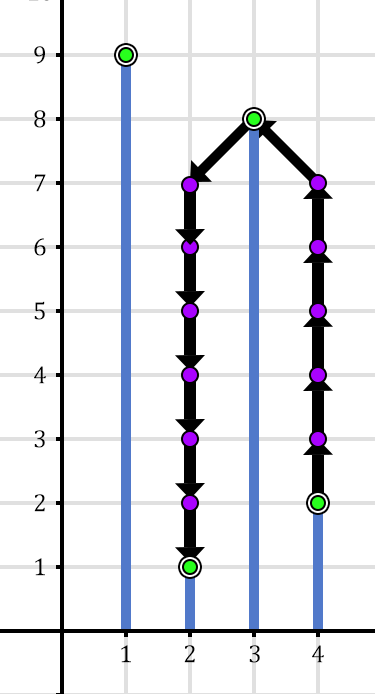

Description
At Barisan Hills, there exist $N$ hills numbered from $1$ to $N$ from west to east.
The $i$-th hill has a height of $H_i$.
Pak Dengklek has a jetpack that allows him to fly in the air.
Pak Dengklek can do the following simultaneously with his jetpack.
-
Traversing between hills, which does one of the three moves as follows.
- Moves to the east hill next to the current hill. In other words, Pak Dengklek moves to hill $(i + 1)$ if he is currently on hill $i$.
- Moves to the west hill next to the current hill. In other words, Pak Dengklek moves to hill $(i - 1)$ if he is currently on hill $i$.
- Does not move from the current hill.
-
Change elevation, which does one of the three moves as follows.
- Increases the elevation by one. This move requires fuel of $4$ units.
- Decreases the elevation by one. This move requires fuel of $1$ unit.
- Maintain the current elevation. This move requires fuel of $2$ units.
Naturally, when Pak Dengklek is on hill $i$, then his elevation has to be at least $H_i$.
Pak Dengklek got a request to send $Q$ balls with his jetpack.
On the $j$-th delivery, Pak Dengklek will start from the top of hill $S_j$ and deliver a ball to the top of hill $T_j$.
For each delivery, Pak Dengklek wants to minimize the fuel to be used.
Help Pak Dengklek to calculate the minimum fuel required for each delivery!
Constraints
- $2 \le N \le 200\;000$
- $1 \le H_i \le 10^9$
- $1 \le Q \le 200\;000$
- $1 \le S_j, T_j \le N$
- $S_j \neq T_j$
Subtasks
-
(7 points) Contains only the following test case:
$N = 8$, $H = [1, 9, 3, 3, 5, 4, 8, 2]$, $Q = 4$, and the balls delivery $(S_j, T_j)$ are $(1, 8)$, $(3, 6)$, $(6, 4)$, and $(7, 2)$ respectively.
- (5 points) $S_j + 1 = T_j$
- (6 points) $H_i = i$
- (18 points) $N, Q \le 100$, $H_i \le 100$
- (24 points) $N, Q \le 1000$
- (13 points) $S_j = 1$
- (27 points) No additional constraints.
Input
The input is given with the following format:
N
H1 H2 … HN
Q
S1 T1
S2 T2
⋮
SQ TQ
Output
Output $Q$ lines, where the $j$-th line denotes the minimum fuel required on the $j$-th delivery.
Sample Input 1
4
9 1 8 2
2
1 3
4 2
Sample Output 1
3
31
Explanation of Sample 1
To deliver the first ball, Pak Dengklek will start his journey from the top of hill $1$ with the elevation of $9$.
Pak Dengklek will do the following moves:
-
Move to the east and decrease the elevation by one.
This move requires fuel of $1$ and Pak Dengklek moves to hill $2$ with the elevation of $8$.
-
Moves to the east and maintains the elevation.
This move requires fuel of $2$ and Pak Dengklek moves to hill $3$ with the elevation of $8$.
Pak Dengklek arrives on top of hill $3$ with the total fuel of $1 + 2 = 3$.
There is no other solution that uses less amount of fuel.
To deliver the second ball, Pak Dengklek will start his journey from the top of hill $4$ with the elevation of $2$.
Pak Dengklek will do the following moves:
-
Increases elevation by one, $5$ times, without traversing any other hills.
This move requires fuel of $5 \times 4 = 20$ and Pak Dengklek stays at hill $4$ with the elevation of $7$.
-
Moves to the west and increases the elevation by one.
This move requires fuel of $4$ and Pak Dengklek moves to hill $3$ with the elevation of $8$.
-
Moves to the west and decreases the elevation by one.
This move requires fuel of $1$ and Pak Dengklek moves to hill $2$ with the elevation of $7$.
-
Decreases elevation by one, $6$ times, without traversing any other hills.
This move requires fuel of $6 \times 1 = 6$ and Pak Dengklek stays at hill $2$ with the elevation of $1$.
Pak Dengklek arrives on top of hill $2$ with the total fuel of $20 + 4 + 1 + 6 = 31$.
There is no other solution that uses less amount of fuel.
Following are the illustrations for the first and second balls delivery.
 

Sample Input 2
9
1 2 3 2 1 2 3 2 1
4
1 9
4 6
2 6
5 2
Sample Output 2
18
4
9
9